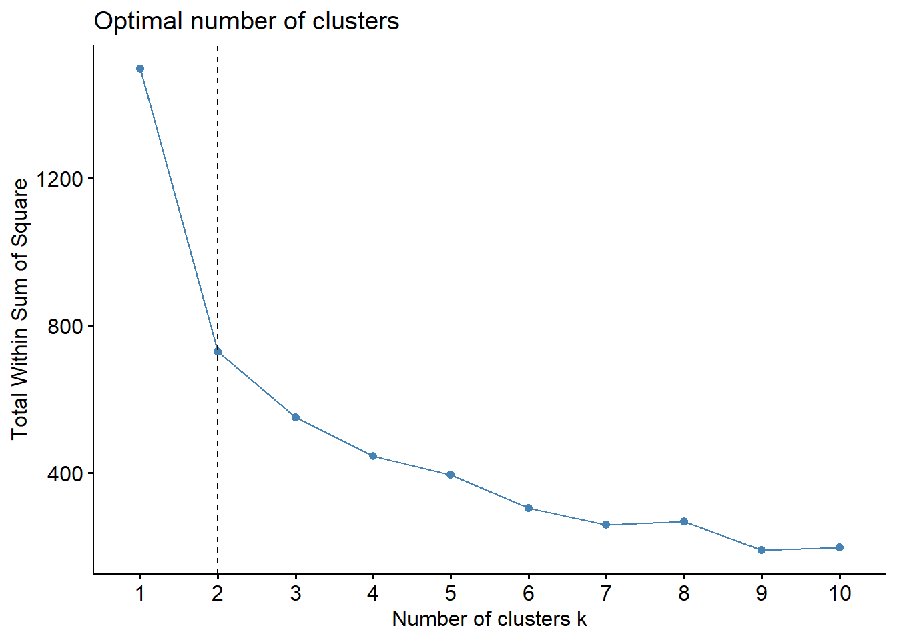
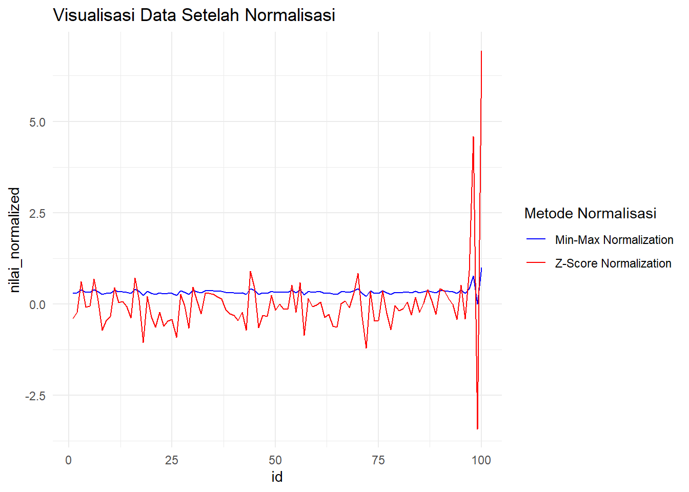

Buku ini sedang dalam tahap tinjauan terbuka. Kami ingin umpan balik Anda untuk membuat buku ini lebih baik bagi. Anda dapat memberikan anotasi pada beberapa teks dengan memilihnya menggunakan kursor dan kemudian klik “Beri Anotasi” pada menu pop-up. Anda juga dapat melihat anotasi orang lain: klik tanda panah di sudut kanan atas halaman
2.3 Contoh Implementasi dengan R
## Menghasilkan dataset contoh
set.seed(123)
data <- data.frame(
id = 1:100,
nilai = c(rnorm(97, mean = 50, sd = 10), 150, -20, 200) # Menambahkan 3 outlier
)# Menampilkan data awal
print(head(data))
#> id nilai
#> 1 1 44.39524
#> 2 2 47.69823
#> 3 3 65.58708
#> 4 4 50.70508
#> 5 5 51.29288
#> 6 6 67.15065# Visualisasi data untuk melihat outlier
ggplot(data, aes(x = id, y = nilai)) +
geom_point() +
ggtitle("Visualisasi Data Awal") +
theme_minimal()
# Deteksi Outlier menggunakan Z-Score
data <- data %>%
mutate(z_score = (nilai - mean(nilai)) / sd(nilai),
outlier_z = abs(z_score) > 3)# Menampilkan data dengan Z-Score dan status outlier
print(data)
#> id nilai z_score outlier_z
#> 1 1 44.39524 -0.389888902 FALSE
#> 2 2 47.69823 -0.234391178 FALSE
#> 3 3 65.58708 0.607780249 FALSE
#> 4 4 50.70508 -0.092834318 FALSE
#> 5 5 51.29288 -0.065162186 FALSE
#> 6 6 67.15065 0.681389823 FALSE
#> 7 7 54.60916 0.090961823 FALSE
#> 8 8 37.34939 -0.721593614 FALSE
#> 9 9 43.13147 -0.449384746 FALSE
#> 10 10 45.54338 -0.335836934 FALSE
#> 11 11 62.24082 0.450244821 FALSE
#> 12 12 53.59814 0.043364858 FALSE
#> 13 13 54.00771 0.062646882 FALSE
#> 14 14 51.10683 -0.073921055 FALSE
#> 15 15 44.44159 -0.387707067 FALSE
#> 16 16 67.86913 0.715214486 FALSE
#> 17 17 54.97850 0.108349735 FALSE
#> 18 18 30.33383 -1.051872020 FALSE
#> 19 19 57.01356 0.204155991 FALSE
#> 20 20 45.27209 -0.348608927 FALSE
#> 21 21 39.32176 -0.628738155 FALSE
#> 22 22 47.82025 -0.228646451 FALSE
#> 23 23 39.73996 -0.609050491 FALSE
#> 24 24 42.71109 -0.469175568 FALSE
#> 25 25 43.74961 -0.420284155 FALSE
#> 26 26 33.13307 -0.920089508 FALSE
#> 27 27 58.37787 0.268385027 FALSE
#> 28 28 51.53373 -0.053823273 FALSE
#> 29 29 38.61863 -0.661840209 FALSE
#> 30 30 62.53815 0.464242577 FALSE
#> 31 31 54.26464 0.074742522 FALSE
#> 32 32 47.04929 -0.264941964 FALSE
#> 33 33 58.95126 0.295378894 FALSE
#> 34 34 58.78133 0.287379320 FALSE
#> 35 35 58.21581 0.260755586 FALSE
#> 36 36 56.88640 0.198169721 FALSE
#> 37 37 55.53918 0.134745032 FALSE
#> 38 38 49.38088 -0.155175036 FALSE
#> 39 39 46.94037 -0.270069312 FALSE
#> 40 40 46.19529 -0.305146338 FALSE
#> 41 41 43.05293 -0.453082311 FALSE
#> 42 42 47.92083 -0.223911518 FALSE
#> 43 43 37.34604 -0.721751380 FALSE
#> 44 44 71.68956 0.895072560 FALSE
#> 45 45 62.07962 0.442655944 FALSE
#> 46 46 38.76891 -0.654765163 FALSE
#> 47 47 45.97115 -0.315698320 FALSE
#> 48 48 45.33345 -0.345720196 FALSE
#> 49 49 57.79965 0.241163628 FALSE
#> 50 50 49.16631 -0.165276728 FALSE
#> 51 51 52.53319 -0.006770992 FALSE
#> 52 52 49.71453 -0.139467487 FALSE
#> 53 53 49.57130 -0.146210798 FALSE
#> 54 54 63.68602 0.518282157 FALSE
#> 55 55 47.74229 -0.232316685 FALSE
#> 56 56 65.16471 0.587895586 FALSE
#> 57 57 34.51247 -0.855149894 FALSE
#> 58 58 55.84614 0.149196136 FALSE
#> 59 59 51.23854 -0.067720164 FALSE
#> 60 60 52.15942 -0.024367305 FALSE
#> 61 61 53.79639 0.052698377 FALSE
#> 62 62 44.97677 -0.362512019 FALSE
#> 63 63 46.66793 -0.282895578 FALSE
#> 64 64 39.81425 -0.605553036 FALSE
#> 65 65 39.28209 -0.630605984 FALSE
#> 66 66 53.03529 0.016866925 FALSE
#> 67 67 54.48210 0.084979892 FALSE
#> 68 68 50.53004 -0.101074926 FALSE
#> 69 69 59.22267 0.308156710 FALSE
#> 70 70 70.50085 0.839110354 FALSE
#> 71 71 45.08969 -0.357195838 FALSE
#> 72 72 26.90831 -1.213138474 FALSE
#> 73 73 60.05739 0.347453203 FALSE
#> 74 74 42.90799 -0.459905692 FALSE
#> 75 75 43.11991 -0.449928857 FALSE
#> 76 76 60.25571 0.356790108 FALSE
#> 77 77 47.15227 -0.260093649 FALSE
#> 78 78 37.79282 -0.700717576 FALSE
#> 79 79 51.81303 -0.040674220 FALSE
#> 80 80 48.61109 -0.191415507 FALSE
#> 81 81 50.05764 -0.123314587 FALSE
#> 82 82 53.85280 0.055354008 FALSE
#> 83 83 46.29340 -0.300527531 FALSE
#> 84 84 56.44377 0.177331259 FALSE
#> 85 85 47.79513 -0.229828884 FALSE
#> 86 86 53.31782 0.030168021 FALSE
#> 87 87 60.96839 0.390341480 FALSE
#> 88 88 54.35181 0.078846437 FALSE
#> 89 89 46.74068 -0.279470279 FALSE
#> 90 90 61.48808 0.414807253 FALSE
#> 91 91 59.93504 0.341693368 FALSE
#> 92 92 55.48397 0.132146000 FALSE
#> 93 93 52.38732 -0.013638154 FALSE
#> 94 94 43.72094 -0.421633790 FALSE
#> 95 95 63.60652 0.514539535 FALSE
#> 96 96 43.99740 -0.408618380 FALSE
#> 97 97 71.87333 0.903724094 FALSE
#> 98 98 150.00000 4.581770457 TRUE
#> 99 99 -20.00000 -3.421487344 TRUE
#> 100 100 200.00000 6.935669811 TRUE# Deteksi Outlier menggunakan IQR
Q1 <- quantile(data$nilai, 0.25)
Q3 <- quantile(data$nilai, 0.75)
IQR <- Q3 - Q1
batas_bawah <- Q1 - 1.5 * IQR
batas_atas <- Q3 + 1.5 * IQR
data <- data %>%
mutate(outlier_iqr = nilai < batas_bawah | nilai > batas_atas)# Menampilkan data dengan status outlier berdasarkan IQR
print(data)
#> id nilai z_score outlier_z outlier_iqr
#> 1 1 44.39524 -0.389888902 FALSE FALSE
#> 2 2 47.69823 -0.234391178 FALSE FALSE
#> 3 3 65.58708 0.607780249 FALSE FALSE
#> 4 4 50.70508 -0.092834318 FALSE FALSE
#> 5 5 51.29288 -0.065162186 FALSE FALSE
#> 6 6 67.15065 0.681389823 FALSE FALSE
#> 7 7 54.60916 0.090961823 FALSE FALSE
#> 8 8 37.34939 -0.721593614 FALSE FALSE
#> 9 9 43.13147 -0.449384746 FALSE FALSE
#> 10 10 45.54338 -0.335836934 FALSE FALSE
#> 11 11 62.24082 0.450244821 FALSE FALSE
#> 12 12 53.59814 0.043364858 FALSE FALSE
#> 13 13 54.00771 0.062646882 FALSE FALSE
#> 14 14 51.10683 -0.073921055 FALSE FALSE
#> 15 15 44.44159 -0.387707067 FALSE FALSE
#> 16 16 67.86913 0.715214486 FALSE FALSE
#> 17 17 54.97850 0.108349735 FALSE FALSE
#> 18 18 30.33383 -1.051872020 FALSE FALSE
#> 19 19 57.01356 0.204155991 FALSE FALSE
#> 20 20 45.27209 -0.348608927 FALSE FALSE
#> 21 21 39.32176 -0.628738155 FALSE FALSE
#> 22 22 47.82025 -0.228646451 FALSE FALSE
#> 23 23 39.73996 -0.609050491 FALSE FALSE
#> 24 24 42.71109 -0.469175568 FALSE FALSE
#> 25 25 43.74961 -0.420284155 FALSE FALSE
#> 26 26 33.13307 -0.920089508 FALSE FALSE
#> 27 27 58.37787 0.268385027 FALSE FALSE
#> 28 28 51.53373 -0.053823273 FALSE FALSE
#> 29 29 38.61863 -0.661840209 FALSE FALSE
#> 30 30 62.53815 0.464242577 FALSE FALSE
#> 31 31 54.26464 0.074742522 FALSE FALSE
#> 32 32 47.04929 -0.264941964 FALSE FALSE
#> 33 33 58.95126 0.295378894 FALSE FALSE
#> 34 34 58.78133 0.287379320 FALSE FALSE
#> 35 35 58.21581 0.260755586 FALSE FALSE
#> 36 36 56.88640 0.198169721 FALSE FALSE
#> 37 37 55.53918 0.134745032 FALSE FALSE
#> 38 38 49.38088 -0.155175036 FALSE FALSE
#> 39 39 46.94037 -0.270069312 FALSE FALSE
#> 40 40 46.19529 -0.305146338 FALSE FALSE
#> 41 41 43.05293 -0.453082311 FALSE FALSE
#> 42 42 47.92083 -0.223911518 FALSE FALSE
#> 43 43 37.34604 -0.721751380 FALSE FALSE
#> 44 44 71.68956 0.895072560 FALSE FALSE
#> 45 45 62.07962 0.442655944 FALSE FALSE
#> 46 46 38.76891 -0.654765163 FALSE FALSE
#> 47 47 45.97115 -0.315698320 FALSE FALSE
#> 48 48 45.33345 -0.345720196 FALSE FALSE
#> 49 49 57.79965 0.241163628 FALSE FALSE
#> 50 50 49.16631 -0.165276728 FALSE FALSE
#> 51 51 52.53319 -0.006770992 FALSE FALSE
#> 52 52 49.71453 -0.139467487 FALSE FALSE
#> 53 53 49.57130 -0.146210798 FALSE FALSE
#> 54 54 63.68602 0.518282157 FALSE FALSE
#> 55 55 47.74229 -0.232316685 FALSE FALSE
#> 56 56 65.16471 0.587895586 FALSE FALSE
#> 57 57 34.51247 -0.855149894 FALSE FALSE
#> 58 58 55.84614 0.149196136 FALSE FALSE
#> 59 59 51.23854 -0.067720164 FALSE FALSE
#> 60 60 52.15942 -0.024367305 FALSE FALSE
#> 61 61 53.79639 0.052698377 FALSE FALSE
#> 62 62 44.97677 -0.362512019 FALSE FALSE
#> 63 63 46.66793 -0.282895578 FALSE FALSE
#> 64 64 39.81425 -0.605553036 FALSE FALSE
#> 65 65 39.28209 -0.630605984 FALSE FALSE
#> 66 66 53.03529 0.016866925 FALSE FALSE
#> 67 67 54.48210 0.084979892 FALSE FALSE
#> 68 68 50.53004 -0.101074926 FALSE FALSE
#> 69 69 59.22267 0.308156710 FALSE FALSE
#> 70 70 70.50085 0.839110354 FALSE FALSE
#> 71 71 45.08969 -0.357195838 FALSE FALSE
#> 72 72 26.90831 -1.213138474 FALSE FALSE
#> 73 73 60.05739 0.347453203 FALSE FALSE
#> 74 74 42.90799 -0.459905692 FALSE FALSE
#> 75 75 43.11991 -0.449928857 FALSE FALSE
#> 76 76 60.25571 0.356790108 FALSE FALSE
#> 77 77 47.15227 -0.260093649 FALSE FALSE
#> 78 78 37.79282 -0.700717576 FALSE FALSE
#> 79 79 51.81303 -0.040674220 FALSE FALSE
#> 80 80 48.61109 -0.191415507 FALSE FALSE
#> 81 81 50.05764 -0.123314587 FALSE FALSE
#> 82 82 53.85280 0.055354008 FALSE FALSE
#> 83 83 46.29340 -0.300527531 FALSE FALSE
#> 84 84 56.44377 0.177331259 FALSE FALSE
#> 85 85 47.79513 -0.229828884 FALSE FALSE
#> 86 86 53.31782 0.030168021 FALSE FALSE
#> 87 87 60.96839 0.390341480 FALSE FALSE
#> 88 88 54.35181 0.078846437 FALSE FALSE
#> 89 89 46.74068 -0.279470279 FALSE FALSE
#> 90 90 61.48808 0.414807253 FALSE FALSE
#> 91 91 59.93504 0.341693368 FALSE FALSE
#> 92 92 55.48397 0.132146000 FALSE FALSE
#> 93 93 52.38732 -0.013638154 FALSE FALSE
#> 94 94 43.72094 -0.421633790 FALSE FALSE
#> 95 95 63.60652 0.514539535 FALSE FALSE
#> 96 96 43.99740 -0.408618380 FALSE FALSE
#> 97 97 71.87333 0.903724094 FALSE FALSE
#> 98 98 150.00000 4.581770457 TRUE TRUE
#> 99 99 -20.00000 -3.421487344 TRUE TRUE
#> 100 100 200.00000 6.935669811 TRUE TRUE# Normalisasi Data menggunakan Min-Max Normalization
data <- data %>%
mutate(nilai_normalized = (nilai - min(nilai)) / (max(nilai) - min(nilai)))# Menampilkan data dengan nilai yang dinormalisasi
print(data)
#> id nilai z_score outlier_z outlier_iqr nilai_normalized
#> 1 1 44.39524 -0.389888902 FALSE FALSE 0.2927057
#> 2 2 47.69823 -0.234391178 FALSE FALSE 0.3077192
#> 3 3 65.58708 0.607780249 FALSE FALSE 0.3890322
#> 4 4 50.70508 -0.092834318 FALSE FALSE 0.3213867
#> 5 5 51.29288 -0.065162186 FALSE FALSE 0.3240585
#> 6 6 67.15065 0.681389823 FALSE FALSE 0.3961393
#> 7 7 54.60916 0.090961823 FALSE FALSE 0.3391326
#> 8 8 37.34939 -0.721593614 FALSE FALSE 0.2606790
#> 9 9 43.13147 -0.449384746 FALSE FALSE 0.2869612
#> 10 10 45.54338 -0.335836934 FALSE FALSE 0.2979245
#> 11 11 62.24082 0.450244821 FALSE FALSE 0.3738219
#> 12 12 53.59814 0.043364858 FALSE FALSE 0.3345370
#> 13 13 54.00771 0.062646882 FALSE FALSE 0.3363987
#> 14 14 51.10683 -0.073921055 FALSE FALSE 0.3232129
#> 15 15 44.44159 -0.387707067 FALSE FALSE 0.2929163
#> 16 16 67.86913 0.715214486 FALSE FALSE 0.3994051
#> 17 17 54.97850 0.108349735 FALSE FALSE 0.3408114
#> 18 18 30.33383 -1.051872020 FALSE FALSE 0.2287901
#> 19 19 57.01356 0.204155991 FALSE FALSE 0.3500616
#> 20 20 45.27209 -0.348608927 FALSE FALSE 0.2966913
#> 21 21 39.32176 -0.628738155 FALSE FALSE 0.2696444
#> 22 22 47.82025 -0.228646451 FALSE FALSE 0.3082739
#> 23 23 39.73996 -0.609050491 FALSE FALSE 0.2715453
#> 24 24 42.71109 -0.469175568 FALSE FALSE 0.2850504
#> 25 25 43.74961 -0.420284155 FALSE FALSE 0.2897709
#> 26 26 33.13307 -0.920089508 FALSE FALSE 0.2415139
#> 27 27 58.37787 0.268385027 FALSE FALSE 0.3562630
#> 28 28 51.53373 -0.053823273 FALSE FALSE 0.3251533
#> 29 29 38.61863 -0.661840209 FALSE FALSE 0.2664483
#> 30 30 62.53815 0.464242577 FALSE FALSE 0.3751734
#> 31 31 54.26464 0.074742522 FALSE FALSE 0.3375666
#> 32 32 47.04929 -0.264941964 FALSE FALSE 0.3047695
#> 33 33 58.95126 0.295378894 FALSE FALSE 0.3588693
#> 34 34 58.78133 0.287379320 FALSE FALSE 0.3580970
#> 35 35 58.21581 0.260755586 FALSE FALSE 0.3555264
#> 36 36 56.88640 0.198169721 FALSE FALSE 0.3494836
#> 37 37 55.53918 0.134745032 FALSE FALSE 0.3433599
#> 38 38 49.38088 -0.155175036 FALSE FALSE 0.3153676
#> 39 39 46.94037 -0.270069312 FALSE FALSE 0.3042744
#> 40 40 46.19529 -0.305146338 FALSE FALSE 0.3008877
#> 41 41 43.05293 -0.453082311 FALSE FALSE 0.2866042
#> 42 42 47.92083 -0.223911518 FALSE FALSE 0.3087310
#> 43 43 37.34604 -0.721751380 FALSE FALSE 0.2606638
#> 44 44 71.68956 0.895072560 FALSE FALSE 0.4167707
#> 45 45 62.07962 0.442655944 FALSE FALSE 0.3730892
#> 46 46 38.76891 -0.654765163 FALSE FALSE 0.2671314
#> 47 47 45.97115 -0.315698320 FALSE FALSE 0.2998689
#> 48 48 45.33345 -0.345720196 FALSE FALSE 0.2969702
#> 49 49 57.79965 0.241163628 FALSE FALSE 0.3536348
#> 50 50 49.16631 -0.165276728 FALSE FALSE 0.3143923
#> 51 51 52.53319 -0.006770992 FALSE FALSE 0.3296963
#> 52 52 49.71453 -0.139467487 FALSE FALSE 0.3168842
#> 53 53 49.57130 -0.146210798 FALSE FALSE 0.3162332
#> 54 54 63.68602 0.518282157 FALSE FALSE 0.3803910
#> 55 55 47.74229 -0.232316685 FALSE FALSE 0.3079195
#> 56 56 65.16471 0.587895586 FALSE FALSE 0.3871123
#> 57 57 34.51247 -0.855149894 FALSE FALSE 0.2477840
#> 58 58 55.84614 0.149196136 FALSE FALSE 0.3447552
#> 59 59 51.23854 -0.067720164 FALSE FALSE 0.3238116
#> 60 60 52.15942 -0.024367305 FALSE FALSE 0.3279973
#> 61 61 53.79639 0.052698377 FALSE FALSE 0.3354382
#> 62 62 44.97677 -0.362512019 FALSE FALSE 0.2953489
#> 63 63 46.66793 -0.282895578 FALSE FALSE 0.3030360
#> 64 64 39.81425 -0.605553036 FALSE FALSE 0.2718829
#> 65 65 39.28209 -0.630605984 FALSE FALSE 0.2694640
#> 66 66 53.03529 0.016866925 FALSE FALSE 0.3319786
#> 67 67 54.48210 0.084979892 FALSE FALSE 0.3385550
#> 68 68 50.53004 -0.101074926 FALSE FALSE 0.3205911
#> 69 69 59.22267 0.308156710 FALSE FALSE 0.3601031
#> 70 70 70.50085 0.839110354 FALSE FALSE 0.4113675
#> 71 71 45.08969 -0.357195838 FALSE FALSE 0.2958622
#> 72 72 26.90831 -1.213138474 FALSE FALSE 0.2132196
#> 73 73 60.05739 0.347453203 FALSE FALSE 0.3638972
#> 74 74 42.90799 -0.459905692 FALSE FALSE 0.2859454
#> 75 75 43.11991 -0.449928857 FALSE FALSE 0.2869087
#> 76 76 60.25571 0.356790108 FALSE FALSE 0.3647987
#> 77 77 47.15227 -0.260093649 FALSE FALSE 0.3052376
#> 78 78 37.79282 -0.700717576 FALSE FALSE 0.2626946
#> 79 79 51.81303 -0.040674220 FALSE FALSE 0.3264229
#> 80 80 48.61109 -0.191415507 FALSE FALSE 0.3118686
#> 81 81 50.05764 -0.123314587 FALSE FALSE 0.3184438
#> 82 82 53.85280 0.055354008 FALSE FALSE 0.3356946
#> 83 83 46.29340 -0.300527531 FALSE FALSE 0.3013336
#> 84 84 56.44377 0.177331259 FALSE FALSE 0.3474717
#> 85 85 47.79513 -0.229828884 FALSE FALSE 0.3081597
#> 86 86 53.31782 0.030168021 FALSE FALSE 0.3332628
#> 87 87 60.96839 0.390341480 FALSE FALSE 0.3680381
#> 88 88 54.35181 0.078846437 FALSE FALSE 0.3379628
#> 89 89 46.74068 -0.279470279 FALSE FALSE 0.3033667
#> 90 90 61.48808 0.414807253 FALSE FALSE 0.3704003
#> 91 91 59.93504 0.341693368 FALSE FALSE 0.3633411
#> 92 92 55.48397 0.132146000 FALSE FALSE 0.3431090
#> 93 93 52.38732 -0.013638154 FALSE FALSE 0.3290333
#> 94 94 43.72094 -0.421633790 FALSE FALSE 0.2896406
#> 95 95 63.60652 0.514539535 FALSE FALSE 0.3800297
#> 96 96 43.99740 -0.408618380 FALSE FALSE 0.2908973
#> 97 97 71.87333 0.903724094 FALSE FALSE 0.4176060
#> 98 98 150.00000 4.581770457 TRUE TRUE 0.7727273
#> 99 99 -20.00000 -3.421487344 TRUE TRUE 0.0000000
#> 100 100 200.00000 6.935669811 TRUE TRUE 1.0000000# Normalisasi Data menggunakan Z-Score Normalization
data <- data %>%
mutate(nilai_z_normalized = (nilai - mean(nilai)) / sd(nilai))# Menampilkan data dengan nilai yang dinormalisasi menggunakan Z-Score
print(data)
#> id nilai z_score outlier_z outlier_iqr nilai_normalized
#> 1 1 44.39524 -0.389888902 FALSE FALSE 0.2927057
#> 2 2 47.69823 -0.234391178 FALSE FALSE 0.3077192
#> 3 3 65.58708 0.607780249 FALSE FALSE 0.3890322
#> 4 4 50.70508 -0.092834318 FALSE FALSE 0.3213867
#> 5 5 51.29288 -0.065162186 FALSE FALSE 0.3240585
#> 6 6 67.15065 0.681389823 FALSE FALSE 0.3961393
#> 7 7 54.60916 0.090961823 FALSE FALSE 0.3391326
#> 8 8 37.34939 -0.721593614 FALSE FALSE 0.2606790
#> 9 9 43.13147 -0.449384746 FALSE FALSE 0.2869612
#> 10 10 45.54338 -0.335836934 FALSE FALSE 0.2979245
#> 11 11 62.24082 0.450244821 FALSE FALSE 0.3738219
#> 12 12 53.59814 0.043364858 FALSE FALSE 0.3345370
#> 13 13 54.00771 0.062646882 FALSE FALSE 0.3363987
#> 14 14 51.10683 -0.073921055 FALSE FALSE 0.3232129
#> 15 15 44.44159 -0.387707067 FALSE FALSE 0.2929163
#> 16 16 67.86913 0.715214486 FALSE FALSE 0.3994051
#> 17 17 54.97850 0.108349735 FALSE FALSE 0.3408114
#> 18 18 30.33383 -1.051872020 FALSE FALSE 0.2287901
#> 19 19 57.01356 0.204155991 FALSE FALSE 0.3500616
#> 20 20 45.27209 -0.348608927 FALSE FALSE 0.2966913
#> 21 21 39.32176 -0.628738155 FALSE FALSE 0.2696444
#> 22 22 47.82025 -0.228646451 FALSE FALSE 0.3082739
#> 23 23 39.73996 -0.609050491 FALSE FALSE 0.2715453
#> 24 24 42.71109 -0.469175568 FALSE FALSE 0.2850504
#> 25 25 43.74961 -0.420284155 FALSE FALSE 0.2897709
#> 26 26 33.13307 -0.920089508 FALSE FALSE 0.2415139
#> 27 27 58.37787 0.268385027 FALSE FALSE 0.3562630
#> 28 28 51.53373 -0.053823273 FALSE FALSE 0.3251533
#> 29 29 38.61863 -0.661840209 FALSE FALSE 0.2664483
#> 30 30 62.53815 0.464242577 FALSE FALSE 0.3751734
#> 31 31 54.26464 0.074742522 FALSE FALSE 0.3375666
#> 32 32 47.04929 -0.264941964 FALSE FALSE 0.3047695
#> 33 33 58.95126 0.295378894 FALSE FALSE 0.3588693
#> 34 34 58.78133 0.287379320 FALSE FALSE 0.3580970
#> 35 35 58.21581 0.260755586 FALSE FALSE 0.3555264
#> 36 36 56.88640 0.198169721 FALSE FALSE 0.3494836
#> 37 37 55.53918 0.134745032 FALSE FALSE 0.3433599
#> 38 38 49.38088 -0.155175036 FALSE FALSE 0.3153676
#> 39 39 46.94037 -0.270069312 FALSE FALSE 0.3042744
#> 40 40 46.19529 -0.305146338 FALSE FALSE 0.3008877
#> 41 41 43.05293 -0.453082311 FALSE FALSE 0.2866042
#> 42 42 47.92083 -0.223911518 FALSE FALSE 0.3087310
#> 43 43 37.34604 -0.721751380 FALSE FALSE 0.2606638
#> 44 44 71.68956 0.895072560 FALSE FALSE 0.4167707
#> 45 45 62.07962 0.442655944 FALSE FALSE 0.3730892
#> 46 46 38.76891 -0.654765163 FALSE FALSE 0.2671314
#> 47 47 45.97115 -0.315698320 FALSE FALSE 0.2998689
#> 48 48 45.33345 -0.345720196 FALSE FALSE 0.2969702
#> 49 49 57.79965 0.241163628 FALSE FALSE 0.3536348
#> 50 50 49.16631 -0.165276728 FALSE FALSE 0.3143923
#> 51 51 52.53319 -0.006770992 FALSE FALSE 0.3296963
#> 52 52 49.71453 -0.139467487 FALSE FALSE 0.3168842
#> 53 53 49.57130 -0.146210798 FALSE FALSE 0.3162332
#> 54 54 63.68602 0.518282157 FALSE FALSE 0.3803910
#> 55 55 47.74229 -0.232316685 FALSE FALSE 0.3079195
#> 56 56 65.16471 0.587895586 FALSE FALSE 0.3871123
#> 57 57 34.51247 -0.855149894 FALSE FALSE 0.2477840
#> 58 58 55.84614 0.149196136 FALSE FALSE 0.3447552
#> 59 59 51.23854 -0.067720164 FALSE FALSE 0.3238116
#> 60 60 52.15942 -0.024367305 FALSE FALSE 0.3279973
#> 61 61 53.79639 0.052698377 FALSE FALSE 0.3354382
#> 62 62 44.97677 -0.362512019 FALSE FALSE 0.2953489
#> 63 63 46.66793 -0.282895578 FALSE FALSE 0.3030360
#> 64 64 39.81425 -0.605553036 FALSE FALSE 0.2718829
#> 65 65 39.28209 -0.630605984 FALSE FALSE 0.2694640
#> 66 66 53.03529 0.016866925 FALSE FALSE 0.3319786
#> 67 67 54.48210 0.084979892 FALSE FALSE 0.3385550
#> 68 68 50.53004 -0.101074926 FALSE FALSE 0.3205911
#> 69 69 59.22267 0.308156710 FALSE FALSE 0.3601031
#> 70 70 70.50085 0.839110354 FALSE FALSE 0.4113675
#> 71 71 45.08969 -0.357195838 FALSE FALSE 0.2958622
#> 72 72 26.90831 -1.213138474 FALSE FALSE 0.2132196
#> 73 73 60.05739 0.347453203 FALSE FALSE 0.3638972
#> 74 74 42.90799 -0.459905692 FALSE FALSE 0.2859454
#> 75 75 43.11991 -0.449928857 FALSE FALSE 0.2869087
#> 76 76 60.25571 0.356790108 FALSE FALSE 0.3647987
#> 77 77 47.15227 -0.260093649 FALSE FALSE 0.3052376
#> 78 78 37.79282 -0.700717576 FALSE FALSE 0.2626946
#> 79 79 51.81303 -0.040674220 FALSE FALSE 0.3264229
#> 80 80 48.61109 -0.191415507 FALSE FALSE 0.3118686
#> 81 81 50.05764 -0.123314587 FALSE FALSE 0.3184438
#> 82 82 53.85280 0.055354008 FALSE FALSE 0.3356946
#> 83 83 46.29340 -0.300527531 FALSE FALSE 0.3013336
#> 84 84 56.44377 0.177331259 FALSE FALSE 0.3474717
#> 85 85 47.79513 -0.229828884 FALSE FALSE 0.3081597
#> 86 86 53.31782 0.030168021 FALSE FALSE 0.3332628
#> 87 87 60.96839 0.390341480 FALSE FALSE 0.3680381
#> 88 88 54.35181 0.078846437 FALSE FALSE 0.3379628
#> 89 89 46.74068 -0.279470279 FALSE FALSE 0.3033667
#> 90 90 61.48808 0.414807253 FALSE FALSE 0.3704003
#> 91 91 59.93504 0.341693368 FALSE FALSE 0.3633411
#> 92 92 55.48397 0.132146000 FALSE FALSE 0.3431090
#> 93 93 52.38732 -0.013638154 FALSE FALSE 0.3290333
#> 94 94 43.72094 -0.421633790 FALSE FALSE 0.2896406
#> 95 95 63.60652 0.514539535 FALSE FALSE 0.3800297
#> 96 96 43.99740 -0.408618380 FALSE FALSE 0.2908973
#> 97 97 71.87333 0.903724094 FALSE FALSE 0.4176060
#> 98 98 150.00000 4.581770457 TRUE TRUE 0.7727273
#> 99 99 -20.00000 -3.421487344 TRUE TRUE 0.0000000
#> 100 100 200.00000 6.935669811 TRUE TRUE 1.0000000
#> nilai_z_normalized
#> 1 -0.389888902
#> 2 -0.234391178
#> 3 0.607780249
#> 4 -0.092834318
#> 5 -0.065162186
#> 6 0.681389823
#> 7 0.090961823
#> 8 -0.721593614
#> 9 -0.449384746
#> 10 -0.335836934
#> 11 0.450244821
#> 12 0.043364858
#> 13 0.062646882
#> 14 -0.073921055
#> 15 -0.387707067
#> 16 0.715214486
#> 17 0.108349735
#> 18 -1.051872020
#> 19 0.204155991
#> 20 -0.348608927
#> 21 -0.628738155
#> 22 -0.228646451
#> 23 -0.609050491
#> 24 -0.469175568
#> 25 -0.420284155
#> 26 -0.920089508
#> 27 0.268385027
#> 28 -0.053823273
#> 29 -0.661840209
#> 30 0.464242577
#> 31 0.074742522
#> 32 -0.264941964
#> 33 0.295378894
#> 34 0.287379320
#> 35 0.260755586
#> 36 0.198169721
#> 37 0.134745032
#> 38 -0.155175036
#> 39 -0.270069312
#> 40 -0.305146338
#> 41 -0.453082311
#> 42 -0.223911518
#> 43 -0.721751380
#> 44 0.895072560
#> 45 0.442655944
#> 46 -0.654765163
#> 47 -0.315698320
#> 48 -0.345720196
#> 49 0.241163628
#> 50 -0.165276728
#> 51 -0.006770992
#> 52 -0.139467487
#> 53 -0.146210798
#> 54 0.518282157
#> 55 -0.232316685
#> 56 0.587895586
#> 57 -0.855149894
#> 58 0.149196136
#> 59 -0.067720164
#> 60 -0.024367305
#> 61 0.052698377
#> 62 -0.362512019
#> 63 -0.282895578
#> 64 -0.605553036
#> 65 -0.630605984
#> 66 0.016866925
#> 67 0.084979892
#> 68 -0.101074926
#> 69 0.308156710
#> 70 0.839110354
#> 71 -0.357195838
#> 72 -1.213138474
#> 73 0.347453203
#> 74 -0.459905692
#> 75 -0.449928857
#> 76 0.356790108
#> 77 -0.260093649
#> 78 -0.700717576
#> 79 -0.040674220
#> 80 -0.191415507
#> 81 -0.123314587
#> 82 0.055354008
#> 83 -0.300527531
#> 84 0.177331259
#> 85 -0.229828884
#> 86 0.030168021
#> 87 0.390341480
#> 88 0.078846437
#> 89 -0.279470279
#> 90 0.414807253
#> 91 0.341693368
#> 92 0.132146000
#> 93 -0.013638154
#> 94 -0.421633790
#> 95 0.514539535
#> 96 -0.408618380
#> 97 0.903724094
#> 98 4.581770457
#> 99 -3.421487344
#> 100 6.935669811# Visualisasi data setelah normalisasi
ggplot(data, aes(x = id)) +
geom_line(aes(y = nilai_normalized, color = "Min-Max Normalization")) +
geom_line(aes(y = nilai_z_normalized, color = "Z-Score Normalization")) +
ggtitle("Visualisasi Data Setelah Normalisasi") +
theme_minimal() +
scale_color_manual(values = c("blue", "red")) +
labs(color = "Metode Normalisasi")